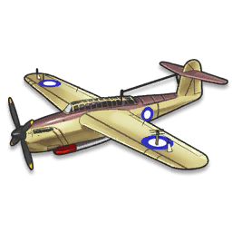

Barracuda

- Chế tạo bởi Fairey Aviation.
- Thiết kế cho 1 đội bay 3 người.
- Chiều dài: 12.12 m
- Sải cánh: 14.99 m
- Chiều cao: 4.62 m
- Diện tích bề mặt cánh: 37.60 m2
- Trọng lượng (không tải): 4,241 kg
- Động cơ Rolls-Royce Merlin 32 12 xy lanh, với công suất 1,640 mã lực.
Back to Home